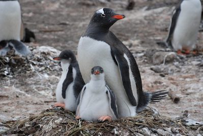
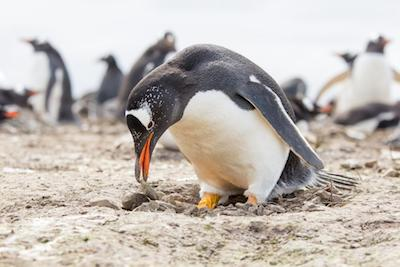

Wow! Based on your answers... You share similarities with the Gentoo Penguin (Pygoscelis papua)

The Gentoo Penguin is a very docile and nurturing bird that can be found on the Antarctic peninsula and parts of the southern Indian Ocean. These monogomus birds take care of their partners, offspring and nests which are the only instances where the Gentoo Penguins will attack other penguins or creatures. Like the Gentoo Penguins, you are a gentle, kind and nurturing person who enjoys cold weather over hot weather and avoids fights, but will stick up for those closest to you if necessary.
Want to learn more about this species? Click the Feather!

Click on Ceasar to Restart!